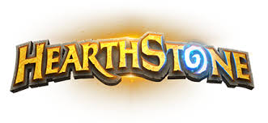

- 게임 모드
- 카드의 종류
- 하스스톤의 용어
카드의 종류

하스스톤에는 정말 많은 카드들이 있습니다. 그러나 그 카드들을 종류별로 구분하면 종류는 얼마 되지 않습니다.
그 종류에는 하수인, 주문, 비밀, 퀘스트 이 4종류가 다입니다.
1. 하수인
하수인 카드는 하스스톤의 기본이 되는 카드입니다. 전장에 내보낼 수 있는 몬스터라고 생각하면 편할 겁니다.
하수인 카드는 모두 마나, 공격력, 체력, 효과, 종족값으로 구분됩니다. 효과에는 전투의 함성, 죽음의 메아리,
턴 종료시 발동, 턴 시작시 발동, 죽을때까지 발동이 있습니다. 종족값은 용족, 야수, 정령, 기계가 있습니다.
2. 주문
3. 비밀
4. 퀘스트